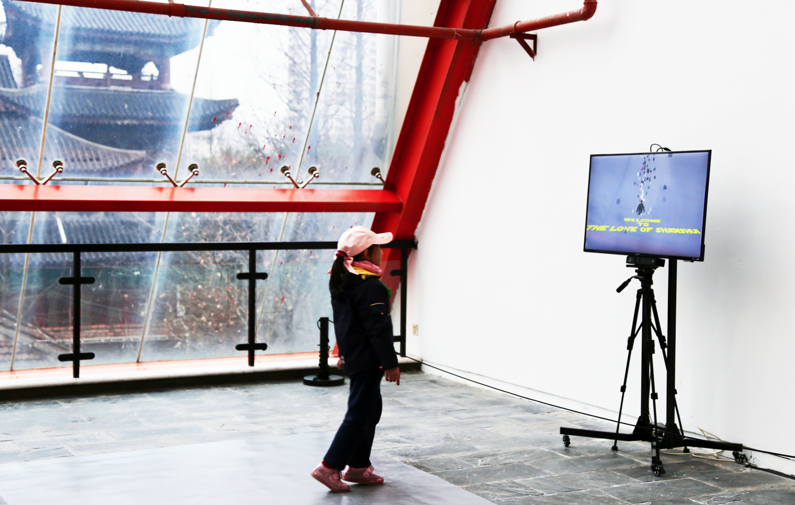

The Spirit of Shanshui 山水精神
January 2019
Language:
Processing
Overview
“The Spirit of Shanshui” is an interactive installation by which the participant moves in front of a Kinect camera and abstract geometries - symbolized mountain and water elements - will bump-up from their head, fall and bounce. This installation utilizes interactive visual simulation for entertainment, and to bring attention to concept of the spirit of Shanshui and encourage the eastern Shanshui painting tradition.
* participants interacting with the installation:
